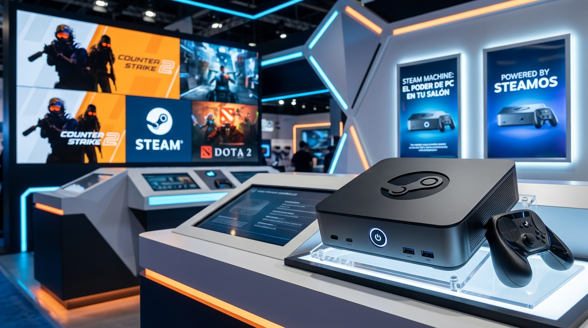

La redención del salón: Valve desafía las reglas del juego con la nueva Steam Machine 2026
Valve vuelve a la carga en el hardware de sobremesa con la nueva Steam Machine. Analizamos su potencia frente a PS5 y Xbox Series X, sus especificaciones técnicas, las polémicas limitaciones de su catálogo y si su elevado precio de salida, desde 1039 euros, justifica la conquista de tu salón.

El renacimiento del salón: El regreso triunfal de Valve al hardware de sobremesa
La historia de la industria del videojuego está repleta de segundas oportunidades, y Valve es experta en jugar a largo plazo. Tras revolucionar el mercado portátil con la Steam Deck, la compañía liderada por Gabe Newell retoma su asignatura pendiente original. La nueva Steam Machine no es un concepto nuevo —su primer y tibio intento se remonta a 2015—, pero el panorama de 2026 es radicalmente distinto. Con el auge de los mini PC de salón y la madurez absoluta de SteamOS, Valve regresa con una propuesta audaz, compacta y de corte marcadamente premium.
Especificaciones técnicas: El poder del 'GabeCube' bajo la lupa
El diseño de la nueva máquina de Valve, apodado cariñosamente por la comunidad como 'GabeCube', destaca por su ingeniería modular. Su chasis compacto cuenta con un frontal intercambiable y un sistema de refrigeración optimizado que domina el interior del dispositivo. Pero, ¿qué hay bajo el capó?
La Steam Machine se presenta en el mercado con una arquitectura semipersonalizada de última generación:
- Procesador: Chip AMD Zen 4 de 6 núcleos y 12 hilos, capaz de alcanzar los 4.8 GHz con un TDP optimizado de 30W.
- Gráficos: GPU AMD RDNA3 semipersonalizada con 28 unidades de cómputo (CU).
- Memoria: 16 GB de memoria RAM DDR5 acompañados de 8 GB de VRAM GDDR6 dedicados.
- Almacenamiento: Opciones de SSD NVMe de alta velocidad que van desde los 512 GB hasta los 2 Terabytes.
¿Es realmente menos potente que PS5 y Xbox Series X?
Los primeros análisis técnicos de medios especializados y laboratorios independientes como LTT Labs han encendido el debate en redes sociales. En términos de potencia bruta de GPU, la Steam Machine se queda por detrás de PS5 y Xbox Series X. Sin embargo, los expertos coinciden en que la comparación directa es injusta. No estamos ante una consola cerrada de arquitectura rígida, sino ante un PC de formato mini optimizado para el salón.
La presencia de SteamOS (basado en Linux) permite una gestión de recursos extremadamente eficiente y un rendimiento excelente en resoluciones dinámicas, desmarcándose de la rigidez de los ecosistemas cerrados de Sony y Microsoft.
El gran talón de Aquiles: El drama del antitrampas y los grandes ausentes
A pesar de sus bondades técnicas, el lanzamiento no está exento de polémica. La elección de Valve de apostar firmemente por su sistema operativo basado en Linux vuelve a chocar contra un muro histórico: el software antitrampas (Anti-Cheat) de nivel de kernel de Windows. Esto se traduce en una noticia devastadora para los amantes del juego competitivo online: la Steam Machine no permite jugar a éxitos masivos como Fortnite, Destiny 2 o Valorant en su configuración por defecto.
Aunque los usuarios más entusiastas siempre tendrán la opción de instalar Windows de forma secundaria gracias a la arquitectura abierta del sistema, la experiencia de 'encender y jugar' que promete Valve se ve empañada para el público generalista que busca sustituir su consola tradicional por este dispositivo.
Modelos, precios y disponibilidad en el mercado
La exclusividad y los componentes de gama media-alta se pagan. La nueva Steam Machine se posiciona en el mercado como un artículo de gama alta, con un precio de partida que arranca en los 1039 euros para su versión más básica. El lanzamiento global y su disponibilidad física en los principales mercados están programados para el 30 de junio de 2026, con las reservas ya abiertas en su plataforma oficial bajo un estricto sistema de asignación aleatoria para evitar la especulación.
Las opciones de compra confirmadas son las siguientes:
- Steam Machine de 512 GB: La opción de entrada ideal para quienes no requieran almacenar decenas de juegos triple A simultáneamente.
- Steam Machine de 512 GB + Steam Controller: El pack recomendado para experimentar el control diseñado por Valve.
- Steam Machine de 2 Terabytes (TB): La versión definitiva para los entusiastas del rendimiento y el almacenamiento masivo.
- Steam Machine de 2 TB + Steam Controller: El ecosistema premium completo para el salón.
Vedicto de KazokuGaming: ¿Merece la pena el desembolso?
Valve no busca competir en volumen de ventas con las consolas tradicionales de sobremesa; su objetivo es liderar la transición definitiva del PC gaming al salón de casa. La Steam Machine (2026) es un hardware bellísimo, silencioso y extremadamente versátil. Si eres un jugador que valora la libertad del ecosistema de PC, la personalización y tienes el presupuesto para afrontar su coste de entrada, estás ante el dispositivo definitivo. No obstante, si tu prioridad absoluta son los 'Battle Royale' competitivos y buscas una relación potencia-precio ajustada, las consolas tradicionales seguirán reinando en tu televisor por un tiempo.